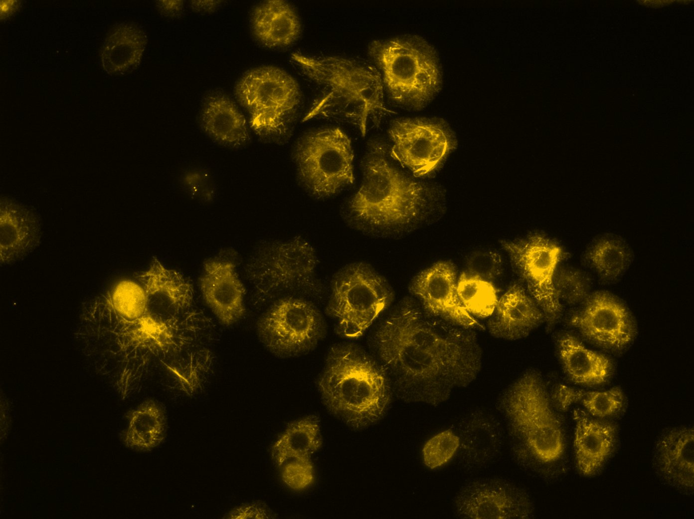
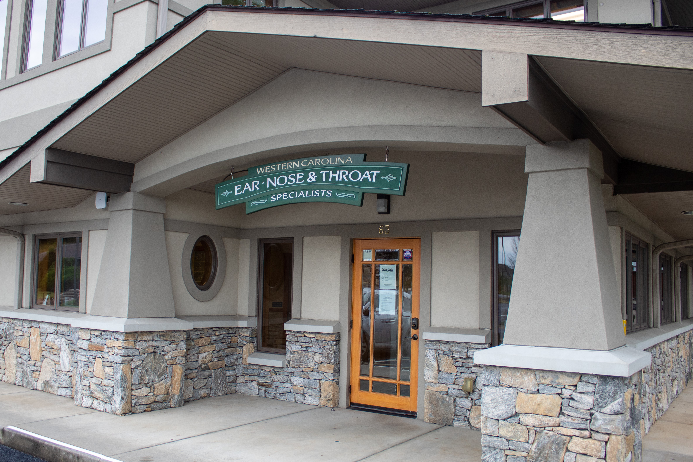

Ophthalmic Assistant
Mountain Eye Associates
May 2022 - Present
Clyde, North Carolina
- Assists Ophthalmologists/Optometrists treating patients with various visual conditions
- Develops relationships with patients while following Physician orders
- Works with patients to choose the best-fit eyewear - contacts, monofocal glasses, bifocals, trifocals
- Instructs patients on the proper utilization of contact lens and eyeglass use/care
- Documents appointment details, maintaining patient charts with detailed notes
- Administers visual field tests, eye drop administration for dilation, tonometry, and refraction of patients
- Cleans and sterilizes equipment and cleans the work environment/patient rooms
- Provides proper drops to prepare patients for Yag/SLT surgeries
- Educates patients/families on surgery details, complications, and after-care
Mountain Eye Associates
Photographer
Stephen Wenzel Photography
Mar 2016 - Present
Clyde, North Carolina
- Manages the production and editing of images using Adobe Suite: Photoshop and Lightroom
- Communicates with clients to efficiently and creatively portray them in contrast with their surroundings
- Develops knowledge regarding the physics of the camera body and equipment used to capture images in differing environments
- Generates a user-friendly and exciting customer experience both online and during the session
- Organizes a business plan that favors the client's needs and generates income for the business
- Donates 10 percent of profits to a local nonprofit, 501(c)(3), organization
- Serves over 50 clients across multiple counties in North Carolina
 Stephen Wenzel Photography
Stephen Wenzel Photography
Undergraduate Researcher
Dr. Stephen Rogers' Lab - UNC Chapel Hill Biology Department
January 2022 - April 2022
Chapel Hill, North Carolina
- Analyzed and critiqued published scientific literature pertaining to the effects of drug treatments on acetylated and de-acetylated microtubules in D. melanogaster
- Generated next-step hypotheses and means to test those hypotheses from information gathered by previously conducted experiments
- Operated a fluorescence microscope (Nikon Eclipse Ti) along with a confocal lens in order to capture kymographs of mitochondria movement along microtubules, tracking displacement and analyzing for velocity and acceleration given various drug treatments
- Generated and executed experiments with rigor and reproducibility
- Analyzed, quantified, and presented data in order to effectively explain experimental results to individuals both within and outside of the scientific community
Dr. Stephen Rogers' Lab
Nikon Eclipse Ti2 Series
Organic Chemistry II Peer Mentor
UNC Chapel Hill Chemistry Department
August 2021 - April 2022
Chapel Hill, North Carolina
- Generated study aids and supplemental worksheets for students enrolled in the second course of organic chemistry at UNC Chapel Hill
- Provided aid and served as a leader by demonstrating and creating learning strategies, concept review, and upper-level thinking questions for students in a diverse classroom environment
- Collaborated with a peer mentor team and the instructor to improve the understanding of important organic chemistry concepts among students
- Developed problem-solving skills in order to maximize potential as a peer mentor
 How to be a Great Peer Mentor
The Power of Peer Mentoring
How to be a Great Peer Mentor
The Power of Peer Mentoring
Undergraduate COVID-19 Testing Volunteer
Carolina COVID-19 Student Services Corps
August 2021 - April 2022
Chapel Hill, North Carolina
- Served the students, faculty, and staff at UNC Chapel Hill in order to keep the university open during the course of the COVID-19 pandemic
- Respectfully communicated with a diverse population of individuals in order to ensure a valuable and helpful experience
- Demonstrated understanding of how cultures, values, and morals impact behavior and health care decisions
- Acted to remove potential communication barriers between volunteers and the public, acting to further the mission of the organization
- Served as a valuable resource for individuals testing for COVID-19 by staying up-to-date on current safe practices regarding testing and the pandemic
- Volunteered in order to help an organization aiming to minimize the spread of the variants of COVID-19
 Carolina COVID-19 Student Services Corps
Carolina COVID-19 Student Services Corps
Undergraduate Research Assistant
Rogers Lab, Slep Lab - UNC Chapel Hill Department of Biology
"Investigation of the Comparative Effects of Intralumenal Microtubule Acetylation on Drosophila S2 cells When Treated with Cytochalasin D"
August 2021 - December 2021
Chapel Hill, North Carolina
- Read and critiqued published scientific literature in order to accurately gather information relevant to the experiments at hand
- Generated next-step hypotheses and means to test those hypotheses from information gathered from previously conducted experiments
- Generated and executed experiments with rigor and reproducibility
- Analyzed, quantified, and presented data in order to effectively explain experimental results to individuals both within and outside of the scientific community

Rogers Lab
Slep Lab
UNC Biology Undergraduate Research
Medical and Online Assistant
Western Carolina Ear, Nose and Throat
Summers of 2018, 2019, & 2021
Clyde, North Carolina
- Managed the layout of website content for optimal user experience using HTML and CSS, as well as the Wix website builder
- Created content via photography, videography, blog posts, and website content in order to maximize public outreach
- Shadowed otolaryngologists in order to learn about medical and surgical treatment of hearing loss, ear infections, balance disorders, tinnitus, nerve pain, and facial and cranial nerve disorders

Western Carolina ENT & Center for Hearing
Volunteer Photographer
Folkmoot International Dance Festival
Summers of 2018 - 2021
Waynesville, North Carolina
- Captured photos at all performances and events throughout the annual summer folk dance festival
- Captured over 2000 images each year, creatively editing 300 photos of them through Adobe Lightroom and Photoshop for the client’s usage
- Publicized and promoted festival performances and events through Instagram and Facebook social platforms in order to help the client with social media outreach
 Folkmoot's Website
Folkmoot's Website
Undergraduate Research Assistant
UNC Adams School of Dentistry
Summer 2020
Chapel Hill, North Carolina
- Progressed towards a common definition of the word “competence” for all health-related professions to improve the applicant review process
- Utilized Microsoft Excel for decisions related to choosing related research papers to further the research progress, using formulas and sorting
 UNC Adams School of Dentistry - Research
UNC Adams School of Dentistry - Research